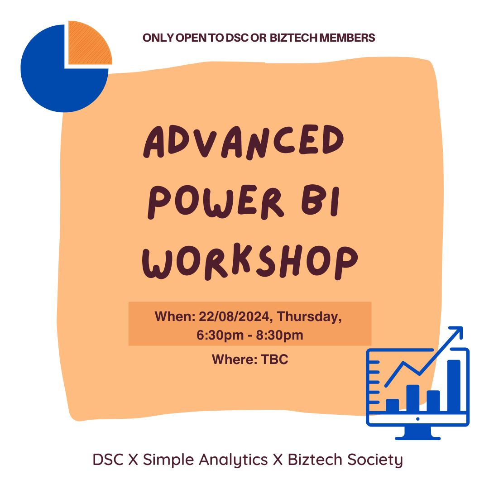

Power BI Case Competition: A Learning and Winning Experience üéâ

About the Competition
In the DSC × IBSS × EY Case Competition 2024, my team participated in a real-world business case challenge sponsored by EY. This competition provided an incredible opportunity to enhance my analytical, teamwork, and data storytelling skills.
- Key Dates:
- Case Released: 15th August
- Submission Deadline: 22nd August
- Final Presentations: 24th August
- Result: üèÜ Third Place!
This competition emphasized not only solving complex business cases but also the importance of effective communication through data visualization.
My Role and Contributions
During the competition, I focused on leveraging Power BI to deliver meaningful insights. My key contributions included:
- Data Cleaning and Preparation: Ensured the dataset was properly wrangled and ready for analysis.
- Dynamic Dashboards: Designed interactive dashboards to highlight key trends and actionable recommendations.
- Data Storytelling: Applied visualization principles to craft compelling narratives that resonated with both judges and teammates.
My Power BI Dashboard
Here is a preview of the interactive Power BI Dashboard that we developed for the competition:

Key Features:
- Sales Overview: Comprehensive view of total sales, profit margins, and customer segments.
- Sales Forecasting: Forecasts generated using SARIMA, Linear Regression, Random Forest, and XGBoost models for precise decision-making.
- Basket Analysis: Association rule-based heatmaps to highlight product correlations and optimize cross-selling strategies.
- Architecture Flow: Detailed architecture for seamless data processing, integration, and visualization.
Dashboard Insights
Sales Forecasting
Our team used multiple regression models to predict sales trends effectively:
- SARIMA: Ideal for time series data with seasonal patterns, identifying periodic sales trends.
- Linear Regression: Efficient for steady sales trends and simple to implement.
- Random Forest Regression: Tackled non-linear relationships in sales data, ensuring robust predictions.
- XGBoost Regression: A high-performance model for complex sales patterns with precision.
Basket Analysis
We utilized Python-generated heatmaps for market basket analysis:
- Market Basket Analysis: Identified frequently co-purchased products using association rule mining.
- Heatmap Visualization: Dynamically updated to showcase strong (yellow) and weak (purple) product correlations.
- This analysis offered insights for cross-selling opportunities and inventory planning.
Architecture Diagram
Our architecture diagram illustrates the seamless data pipeline:
- Data Sources: Integrated data from SharePoint, SQL databases, and APIs.
- Processing Workflow: Applied Python scripts for data transformation before feeding into Power BI.
- Integration: Hosted Power BI dashboards on collaborative platforms like Microsoft Teams and exported them in
.pbixformat for flexibility.
Workshop Insights
Before the competition, I attended the Storytelling with Data workshop by Data Insight, where I learned:
- Design Principles: Simplify visuals for better readability.
- Perception: Understand how users interpret data for maximum impact.
- Tools: Explored Power BI’s advanced storytelling features, also some python stripe.
Download BI Brains Dashboard
Click below to download the complete Power BI project, including:
.pbixfilerequirements.txt- Supporting files
Screenshot of My Certificate
(Optional: Insert a certificate screenshot here)
Final Thoughts
This competition showcased my ability to:
- Solve complex problems using data-driven approaches.
- Communicate insights effectively to non-technical audiences.
- Collaborate in a competitive, fast-paced environment.
If you’re looking for someone with a passion for data and storytelling, feel free to connect with me!
I’m excited to continue my journey as a data analyst, leveraging tools like Power BI to solve real-world challenges. Thank you for reading about my experience!